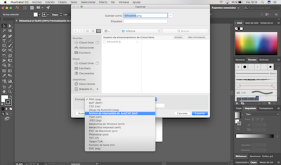
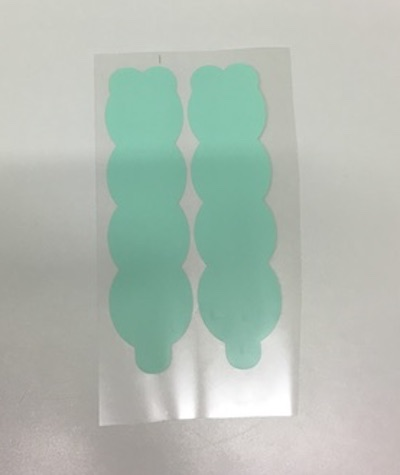

INFLATABLES
12 October 2018
Description of the process:
- Design the shape in Ai. It is important to leave a place for the straw to get in the inflatable and be able to blow.
- Export the file to Dxf format.

- Download “Silhouette” software and open it.
- Open the file with my shape in “Silhouette” and adjust its size to the paper.
- Print the shape in oven paper and take the shape.

- In the computer, make the shape bigger and double it, in order to prepare the file to be printed in the thermotransfer material.
- Print the two bigger shapes in the plastic paper, and then, take the cut shapes to prepare them to prense.

- Prepare the shapes to put in the thermopress: plastic shape+paper shape + plastic shape. Important! Do not forget to put oven paper avobe and under the shape. Put it in the thermopress for 15 seconds.
- Take the inflatable from the sticky paper.
- Put the straw and blow inside to inflate it.
- Final result.
In the first week, we also learnt how to create and programe a webpage, usin Brackets.
You also need to download the software GitHub.
It is necessary, after you finish working in your web page in Brackets, to submit to master in the GitHub platform, and then pull it.